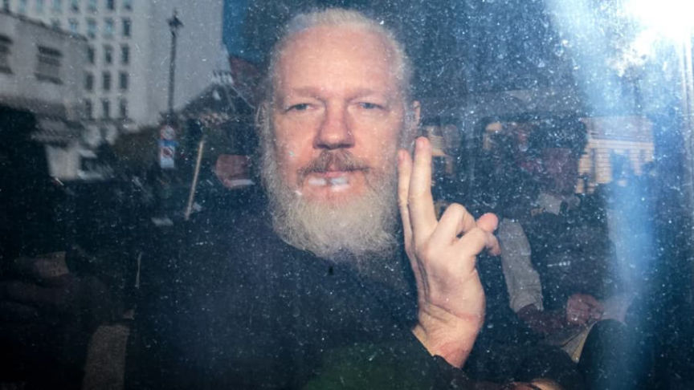
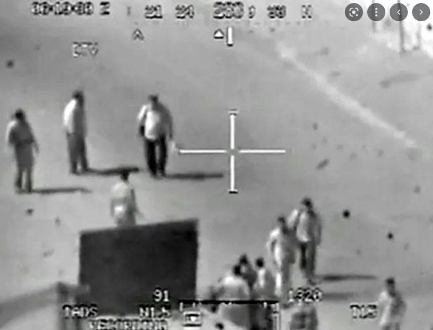
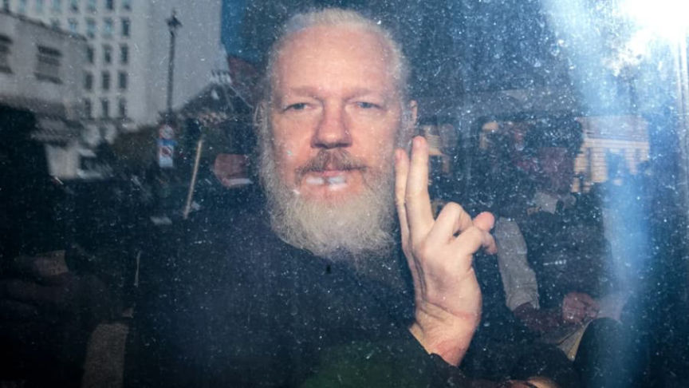
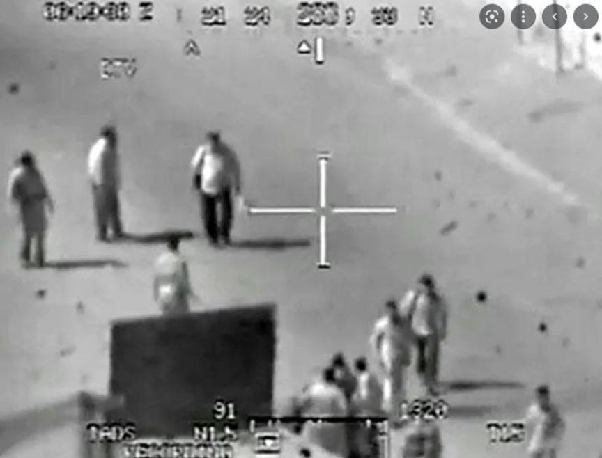

UK Home Secretary Approves Assange's Extradition
~3 min read | Published on 2022-06-17, tagged Julian-Assange using 657 words.
The U.K. Home Secretary approved the extradition of Julian Assange to the United States.
British Home Secretary Priti Patel approved Julian Assange’s extradition to the United States. Assange faces 175 years in prison for publishing the material “stolen” by Manning in 2010.

“[em]The U.K. courts have not found that it would be oppressive, unjust or an abuse of process to extradite Mr. Assange[/em],” the Home Office said. “[em]Nor have they found that extradition would be incompatible with his human rights, including his right to a fair trial and to freedom of expression, and that whilst in the U.S. he will be treated appropriately, including in relation to his health[/em].”
Of course, avoiding extradition to the United States was never a real option for Assange. He has 14 days to appeal the decision.
Collateral Murder is among the files published by Assange in 2010.
“On July 12, 2007, a series of air-to-ground attacks were conducted by a team of two U.S. AH-64 Apache helicopters in Al-Amin al-Thaniyah, New Baghdad, during the Iraqi insurgency which followed the Iraq War. On April 5, 2010, the attacks received worldwide coverage and controversy following the release of 39 minutes of gunsight footage by the Internet whistleblower website WikiLeaks. The footage was portrayed as classified, but the individual who leaked it, U.S. Army soldier Chelsea Manning, testified in 2013 that the video was not classified. The video, which WikiLeaks titled Collateral Murder, showed the crew firing on a group of men and killing several of them, then laughing at some of the casualties, all of whom were civilians, including two Reuters journalists. An anonymous U.S. military official confirmed the authenticity of the footage, which provoked global discussion on the legality and morality of the attacks.”

Assange is not facing charges for the Podesta email dump.
WikiLeaks wrote:
“This is a dark day for Press freedom and for British democracy. Anyone in this country who cares about freedom of expression should be deeply ashamed that the Home Secretary has approved the extradition of Julian Assange to the United States, the country that plotted his assassination.
Julian did nothing wrong. He has committed no crime and is not a criminal. He is a journalist and a publisher, and he is being punished for doing his job.
It was in Priti Patel’s power to do the right thing. Instead, she will forever be remembered as an accomplice of the United States in its agenda to turn investigative journalism into a criminal enterprise.
Foreign laws now determine the limits of press freedom in this country and the journalism that won the industry’s most prestigious prizes has been deemed an extraditable offence and worthy of a life sentence.
The path to Julian’s freedom is long and tortuous. Today is not the end of the fight. It is only the beginning of a new legal battle. We will appeal through the legal system; the next appeal will be before the High Court. We will fight louder and shout harder on the streets, we will organise and we will make Julian’s story known to all.
Make no mistake, this has always been a political case. Julian published evidence that the country trying to extradite him committed war crimes and covered them up; tortured and rendered; bribed foreign officials; and corrupted judicial inquiries into US wrongdoing. Their revenge is to try to disappear him into the darkest recesses of their prison system for the rest of his life to deter others from holding governments to account.
We will not let that happen. Julian’s freedom is coupled to all our freedoms. We will fight to return Julian to his family and to regain freedom of expression for us all”.
It seems as if Assange is an enemy of the political class for spilling their secrets. I do not know how Assange’s eventual life behind bars fits in with the Umfuld narrative that Assange is a part of the establishment.
British Home Secretary Priti Patel approved Julian Assange’s extradition to the United States. Assange faces 175 years in prison for publishing the material “stolen” by Manning in 2010.

Gandalf Assange
“[em]The U.K. courts have not found that it would be oppressive, unjust or an abuse of process to extradite Mr. Assange[/em],” the Home Office said. “[em]Nor have they found that extradition would be incompatible with his human rights, including his right to a fair trial and to freedom of expression, and that whilst in the U.S. he will be treated appropriately, including in relation to his health[/em].”
Of course, avoiding extradition to the United States was never a real option for Assange. He has 14 days to appeal the decision.
Collateral Murder is among the files published by Assange in 2010.
“On July 12, 2007, a series of air-to-ground attacks were conducted by a team of two U.S. AH-64 Apache helicopters in Al-Amin al-Thaniyah, New Baghdad, during the Iraqi insurgency which followed the Iraq War. On April 5, 2010, the attacks received worldwide coverage and controversy following the release of 39 minutes of gunsight footage by the Internet whistleblower website WikiLeaks. The footage was portrayed as classified, but the individual who leaked it, U.S. Army soldier Chelsea Manning, testified in 2013 that the video was not classified. The video, which WikiLeaks titled Collateral Murder, showed the crew firing on a group of men and killing several of them, then laughing at some of the casualties, all of whom were civilians, including two Reuters journalists. An anonymous U.S. military official confirmed the authenticity of the footage, which provoked global discussion on the legality and morality of the attacks.”

Innocent civilians as well as two Reuters news staff were among those killed in the Collateral Murder video.
Assange is not facing charges for the Podesta email dump.
WikiLeaks wrote:
“This is a dark day for Press freedom and for British democracy. Anyone in this country who cares about freedom of expression should be deeply ashamed that the Home Secretary has approved the extradition of Julian Assange to the United States, the country that plotted his assassination.
Julian did nothing wrong. He has committed no crime and is not a criminal. He is a journalist and a publisher, and he is being punished for doing his job.
It was in Priti Patel’s power to do the right thing. Instead, she will forever be remembered as an accomplice of the United States in its agenda to turn investigative journalism into a criminal enterprise.
Foreign laws now determine the limits of press freedom in this country and the journalism that won the industry’s most prestigious prizes has been deemed an extraditable offence and worthy of a life sentence.
The path to Julian’s freedom is long and tortuous. Today is not the end of the fight. It is only the beginning of a new legal battle. We will appeal through the legal system; the next appeal will be before the High Court. We will fight louder and shout harder on the streets, we will organise and we will make Julian’s story known to all.
Make no mistake, this has always been a political case. Julian published evidence that the country trying to extradite him committed war crimes and covered them up; tortured and rendered; bribed foreign officials; and corrupted judicial inquiries into US wrongdoing. Their revenge is to try to disappear him into the darkest recesses of their prison system for the rest of his life to deter others from holding governments to account.
We will not let that happen. Julian’s freedom is coupled to all our freedoms. We will fight to return Julian to his family and to regain freedom of expression for us all”.
It seems as if Assange is an enemy of the political class for spilling their secrets. I do not know how Assange’s eventual life behind bars fits in with the Umfuld narrative that Assange is a part of the establishment.